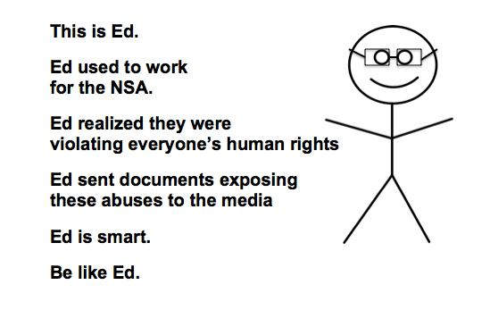

Partido Pirata
gti@piratas.git

As 18 leis piratas
As cláusulas pétreas do Estatuto Pirata representam os pilares fundantes de nossa atuação e de norteamento de nossas posturas. São ao mesmo tempo indicadores dos rumos para seguir e advertência quanto aos erros a evitar a todo custo. Devem figurar alto na documentação do partido sobretudo para balizar o discurso e a ação de piratas em todo o país, de acordo com princípios inegociáveis, definidores da própria identidade pirata.
De acordo com seu novo estatuto, aprovado na 1ª Assembleia Nacional Pirata, o partido defende de forma inegociável as seguintes cláusulas pétreas:
Art. 3º São cláusulas pétreas do Piratas:
i. a defesa dos direitos humanos e das liberdades civis;
ii. a defesa do direito à privacidade;
III. a defesa ao acesso livre à informação;
IV. a defesa do acesso e compartilhamento livres de cultura e conhecimento;
V. a transparência pública;
VI. a democracia plena;
VII. o Estado Laico;
VIII. a liberdade de expressão;
IX. a colaboratividade;
X. a igualdade de gênero, em todas as suas expressões;
XI. o combate a todas as formas de discriminação;
XII. o combate a todas as formas de autoritarismo;
XIII. a defesa do direito inalienável de resistir à opressão;
XIV. o internacionalismo;
XV. a defesa do ativismo hacker;
XVI. o gozo pleno dos direitos inerentes à cidadania, inclusive políticos, ativos e passivos, independente da nacionalidade;
XVII. a plena autodeterminação individual;
XVIII. a neutralidade da rede.
Próxima Reunião
- Data: 30/01/2016
Demandas:
- Escolher um(a) articulador(a)
- Criar um regimento interno
- Enviar o regimento para https://github.com/piratas/regimento-gti
GTI no Telegram https://telegram.me/joinchat/ApLxJgYl7nmk1LrPSnJqBg
O Manifesto GTI
Piratas do Brasil, #hackers, este é um manifesto que visa convocá-los, pegue seu passaporte, precisamos nos unir porque temos muitas coisas para mudar.
Hoje mais um da nossa geração está preso. Provavelmente um dia ou outro te busquem. Sei que o que fazemos não é por irresponsabilidade, ser pego, mas pela responsabilidade que o futuro delega a nós.
Cansamos de sentir a força da outra geração, na forma de repressão.
Vamos romper e ser quem somos, romper as maneiras. Não queremos mais caos do que já há, apenas uma nova forma. Que não seja apenas uma maneira de viver num mundo sem sentido, que esteja contra quem somos.
Faremos um mundo onde as pessoas sejam elas mesmas, queremos um mundo onde possamos compartilhar tudo, sem fronteiras ou restrições. O conhecimento é a herança e riqueza da humanidade - e, a cada dia, ficamos mais longe de termos acesso a ele. Nós não precisamos viver uma farsa, podemos compartilhar verdades.
Regimento Interno do Grupo de Trabalho de Tecnologia da Informação do Partido Pirata
Capítulo I - Do Grupo de Trabalho e suas atribuições
Artigo 1º:
O Grupo Nacional de Tecnologia da Informação do Partido Pirata (doravante chamado "GTI"), o órgão oficial de tecnologia da informação do partido, reger-se-á por este Regimento Interno, que define sua estrutura e funcionamento, sendo este um documento oficial do Partido de acordo com o disposto no art. 5º do Estatuto Pirata.
Artigo 2º:
São documentos oficiais do GTI e deverão ser fixados em seção específica no site oficial do PIRATAS:
I - Regimento Interno;
Artigo 3º:
O GTI tem como atribuições:
I. Desenvolver novas soluções em TI (Tecnologia da informação) que sejam condizentes aos objetivos do partido; II. Administração e manutenção dos sistemas computacionais do partido; III. Orientação do partido no que tange assuntos relacionados a tecnologia; IX.
Capítulo II - Da constituição do GTI
Artigo 4º:
O GTI é composto por todas as pessoas que desempenham as seguintes funções:
I - articuladora:
Cargo definido pelo Estatuto Pirata (Art. 52, §4º) e ocupado por uma única pessoa escolhida a cada seis meses pelos membros colaboradores do GTI. A pessoa que ocupar esse cargo será responsável pela articulação perante a Secretaria Geral e a Coordenação Nacional, pelo cumprimento do Regimento Interno, pela administração dos meios de comunicação oficiais do Partido (quando houver essa função) e pelo diálogo com os demais órgãos e Grupos de Trabalho do PIRATAS;
II - colaboradora:
O colaborador é aquele que se dedica de forma integral ao GTI, tendo direito a voz e voto dentro de tal órgão, assim como o dever de cumprir uma ou mais das atribuições definidas no artigo 3º, respeitando sempre as cláusulas pétreas do partido e agindo de acordo com os documentos oficiais.
Artigo 5º:
O GTI se reunirá preferencialmente a cada trinta dias de forma ordinária no canal de comunicação escolhido pelo grupo, sendo as reuniões abertas à participação de todas as pessoas compondo o grupo de trabalho e interessados em ser um colaborador.
Artigo 6º:
As deliberações internas do GTI se darão em reuniões ordinárias.
§1º:
Terão direito a voto nas deliberações do GTI os colaboradores e a pessoa ocupando cargo de articulação.
Capítulo IV - Dos critérios de admissão de novos colaboradores
Artigo 7º:
Interesse em git e linux são requisitos necessários para ingresso no GTI.
§1º:
A admissão de um colaborador se dará em conformidade com os seguintes critérios e obedecendo as seguintes etapas:
I - deliberação em reunião ordinária;
Capítulo V - Das Sanções Disciplinares
Artigo 8º:
A não participação em reuniões e em canais de comunicações estabelecidos pelo grupo serão considerados afastamento espontâneo do GTI.
Artigo 9º:
No caso de um membro colaborador efetuar ação contrária ao guia editorial, cláusulas pétreas ou documentos oficiais do partido, indicados no Art. 5º do estatuto, uma comissão disciplinar será constituída para analisar o caso e julgar. A comissão será composta por:
I - Articulador(a) eleito(a) do GTI; e II - Todos os outros membros colaborares.
§1º:
Caso o membro em julgamento seja o(a) Articulador(a), ele deverá ser julgado por todos os outros membros colaboradores.
§2º:
Se cabível, a punição poderá variar entre:
I - Advertência;
II - Suspensão dos privilégios de acesso;
III - Remoção dos privilégios de acesso; e
IV - Expulsão do GTI.
O Cheque em Branco da Receita Federal ao Google
Hoje, dia 23 de janeiro de 2016, viemos registrar um fato concreto, inédito, e, por falta de adjetivos, no mínimo curioso: o “cheque em branco” que a Receita Federal do Brasil deu, literalmente, para a Google.

A Receita Federal do Brasil disponibiliza, através da Google Play Store, um app destinado às Pessoas Físicas que possibilita que "qualquer" (as aspas serão logo mais justificadas) cidadão brasileiro possa, entre outras funções, consultar a situação de qualquer CPF diretamente de seu banco de dados. Até aqui, tudo bem...
No entanto, após a atualização do aplicativo para a versão 4.2, percebe-se a existência de um gravíssimo erro no modo de funcionamento do programa. Chamamos de "erro", pois não há a menor possibilidade do mesmo ser um 'bug' ou alguma implementação de 'segurança'. Tudo leva a crer que a decisão para a implementação do modus operandi do programa, na sua atual versão (4.2), foi, de algum modo, planejada e, obviamente, acordada com a Google. Um desrespeito aos direitos constitucionais dos cidadãos brasileiros e ao próprio serviço público brasileiro como um todo. O erro introduzido, que passa despercebido como o "pequeno" problema introduzido na versão 4.2, "discretamente" bloqueia o acesso às informações a pessoas que não estejam devidamente autenticadas na Google Play Store, o que tem causado a insatisfação entre diversos usuários que não sabem da necessidade.


Ou seja, o Estado brasileiro coloca a cargo de uma empresa privada e estrangeira, sem nos informar de maneira consistente, que seus dados (públicos) só podem ser acessados se você tiver uma chave) fornecida por uma empresa do exterior, isso mesmo depois do que vimos em 2013). O objetivo dessa medida só pode ser um: o fornecimento grátis e preciso de como e quando o aplicativo está sendo utilizado, o que vai diretamente contra o direito consitucional à privacidade da cidadã e do cidadão brasileiro que consulta uma informação que é pública, além de expô-lo a uma empresa estrangeira. Lembremos que isso não se deve a nenhuma técnica de proteção de informação sensível, pois estas já são protegidas contra scraping --técnica que utilizada para capturar, por exemplo, uma enorme quantidade dos CPFs existentes. No entanto somente algumas empresas de crédito gozam e fazem uso indiscriminado de tal técnica (sem qualquer consentimento dos cidadãos e, supostamente, do governo) através da não obrigatoriedade de informar a data de nascimento ou do e-CPF em formulários "genéricos".
Um dos objetivos do Partido Pirata é lutar e defender a Internet para que (i) a informação volte a ser verdadeiramente livre, (ii) não seja submetida ao controle absoluto e inquestionável de qualquer instituição, seja pública ou privada, nem de corporações, sejam estas estatais ou não. Existem dados que precisam ser consultados livremente pelos cidadãos e que têm seu acesso dificultado pelas próprias instituições públicas: quem ganhou determinada licitação, se estes têm processos na Justiça ou possuem parentesco com qualquer funcionário na administração pública, ou, simplesmente, se determinado CPF realmente existe e está em situação regular. Porém hoje a necessidade de se realizar isso é em escala, todos os gigabytes precisam ser analisados e as interfaces que nos entregam é, digamos, terrível e isso nos afeta - como essa matéria pode esclarecer - Mudança no ICMS faz uma empresa fechar por minuto.
É mais que sabido que o governo federal, estaduais, municipais, órgãos públicos e outarquias têm dificultado ao máximo o acesso às informações ditas públicas, gastando dinheiro público e tempo dos servidores para criar soluções que impedem a transparência e isonomia da administração pública, não implementando e, quando o faz, o fazendo de maneira porca e desconectada. Se o os governos federais, estaduais, municipais desejam verdadeiramente tornar a informação pública urge que os mesmos utilizem tecnologias descentralizadas como blockchains e parem de usar os servidores públicos para impedir o acesso a informação. Coloquem os recursos para desenvolver formas de se comunicar e ampliar o acesso com melhores APIs e códigos abertos ao invés de aplicativos nada seguros.
O Serpro serve quem, e para quê, afinal de contas?!
23/01/2016